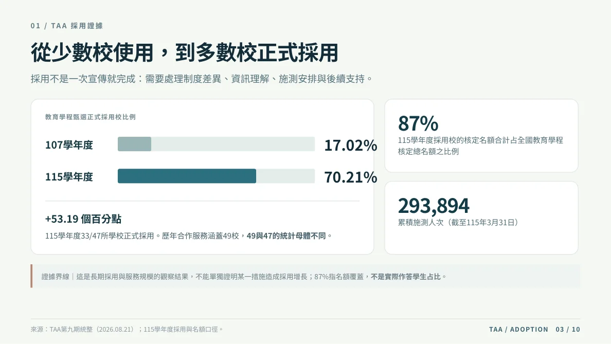

實際成果整理／點圖可放大閱讀
01 / TAA · SERVICE ADOPTION 長期正式運作
讓教育測驗真正進入學校流程
甄選採用並不是單次宣導。各校有不同的審查時程、決策程序與專業考量；從施測安排到結果理解，都需要讓測驗資訊對應到校方當下的工作。
本人工作
統籌年度規劃、教育部與全國師培校窗口，協調研究、資訊、行政與使用端；推進施測導入、報表導讀、校級分析及成果回饋。
服務證據
115學年度33／47校正式採用；第九期五場推廣會議涉及30校、73位師長，15場團體導讀服務625名學生。
延伸應用
協助兩所大學先行試作校務研究（IR）資料應用，提供研究問題與串接分析建議；成果由各校自行保有。
證據界線
採用率增長為長期觀察結果，不代表單一措施的因果成效，也不等同個別使用者留存指標。